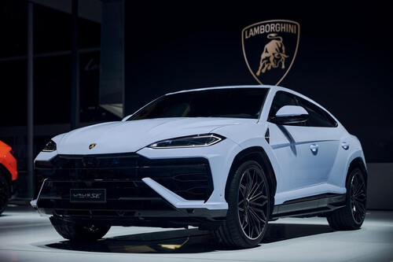

Lamborghini Urus 2025
Marca: Lamborghini
Modelo: Urus
Año: 2025
Precio diario: $8,000
Tipo: SUV de lujo
Transmisión: Automática
Combustible: Gasolina
Pasajeros: 5
Descripción
El Lamborghini Urus 2025 es el SUV más potente del mundo, combinando el ADN deportivo de Lamborghini con la versatilidad y funcionalidad de un vehículo utilitario deportivo de lujo.
Características destacadas:
- Motor V8 4.0L con 650 HP
- Aceleración de 0-100 km/h en 3.6 segundos
- Velocidad máxima de 305 km/h
- Sistema de tracción integral
- 6 modos de conducción